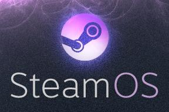

29 octobre 2013
Le nouvel univers de Steam
Cela n'a dû échapper à personne, je suis un grand fan de Valve, et ce depuis Half-Life, premier du nom.
Les récentes annonces à propos de Steam m'ont laissé croire à une annonce d'Half-Life 3, mais ce serait mal connaitre Valve et leurs attentes interminables.
À la place de cela, Valve annonce de nouveaux produits à savoir un système d'exploitation, des machines ainsi qu'une manette de jeu.

Depuis plusieurs années Steam s'est imposé avec son catalogue en ligne et ses nombreuses promotions, faisant de votre compte une foire aux jeux avec même des titres auxquels vous n'avez encore jamais joué ;)
Dernièrement, Steam a été porté sur Mac OS X ainsi que Linux, faisant de celle-ci une plate-forme désormais universelle. Mais non Valve veut aller plus loin !
Voulant concurrencer les futures «consoles», Valve a décidé de frapper fort en proposant dans son écosystème, une machine avec sa manette et son système d'exploitation. Mais quel est l'intérêt face à votre ordinateur ou votre console ? Et bien ici tout est ouvert !

À commencer par le système «Steam OS», basé sur Linux et adapté aux écrans de télévision grâce au mode «Big Picture». Celui-ci permettra bien-sûr de faire tout ce que Steam permet mais aussi apportera plein de fonctions multimédias (que les consoles actuelles font déjà), il sera aussi possible de «Streamer» ses jeux en local sur sa TV, c'est à dire lancer des jeux sur votre PC et de pouvoir y jouer sur votre TV.
Ce système sera disponible sur les machines de Steam mais sera aussi installable indépendamment.
On ne sait pas encore à quoi ressemblera le système, mais on peut supposer qu'on démarrera directement dans le mode Big Picture de Steam.
Valve va aussi proposer leur propre machine, enfin du moins un prototype pour commencer. D'autres marques proposeront aussi leurs machines et je pense que des marques déjà implantées comme Alienware suivront.
Je pense que ce sera une sortie choc, avec un système libre et un choix de la machine, Valve frappera un coup fort pour concurrencer les futures PS4 et Xbox One.
Pour finir, une manette «Révolutionnaire» a été annoncée, celle-ci se compose de deux track-pads, un écran tactile ainsi que de boutons plus traditionnels.
Ce «Steam Controller» sera pensé pour l'ensemble du catalogue Steam, et il sera possible ainsi de joueur aux jeux «clavier/souris» confortablement, du moins on l'espère.
Les trackpads seraient même capables de faire office d'enceintes audio, mais c'est ouf !

Mais le truc le plus génial, c'est que cette manette sera aussi open-source !
Et oui il sera possible d'avoir les plans/schémas et de proposer des modifications et aussi de produire sa propre manette.
Mais alors Half-Life 3 dans tout ça ?!
Et bien il fallait s'y attendre, les annonces concernaient bien Steam et non pas les jeux Valve. On aurait bien pu espérer ce jeu en lancement de la Steam Box, mais non.
De toute manière ça n'aurait pas été vraiment subtile de leur part. On connait bien maintenant Valve qui a pour habitude de lancer ses jeux via des ARG. (Alternate Reality Game).
Eh bien, depuis le temps il semblerait quand même qu'un grand nombre d'indices pointent vers Half-Life 3 mais rien encore de concret...
Que représente vraiment cette planète affichée sur la page de Steam ? Pourquoi faire une promo spéciale d'Euro Truck Simulator 2 ? Pourquoi laisser les fans faire des tas de calculs mathématiques revenant à 3 ?
Le mystère autour d'Half-Life 3 est encore entier.
Est-ce que Steam va révolutionner le monde du jeux-vidéo de salon ? Est-ce qu'ils vont s'imposer face aux nouvelles consoles ? Je pense que oui. Toutes les clés sont là. Quand les joueurs consoles réaliseront le prix des machines, des jeux, l'ouverture de la plateforme, le fait de pouvoir contribuer et de participer au financement des jeux, ils se détourneront sûrement du modèle console classique.
Commentaires 1